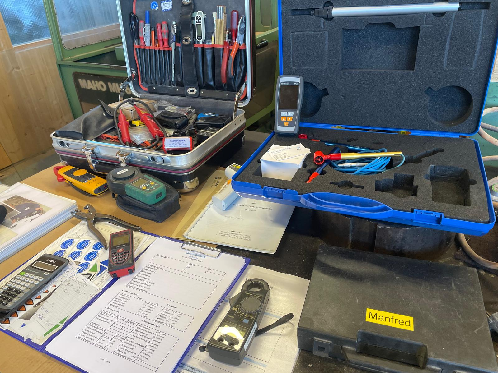
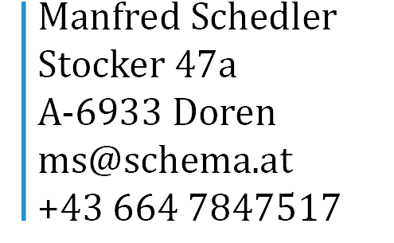

Professioneller Service für Lackieranlagen
Wartung, Beratung und Service im gesamten DACH-Raum
Mit jahrelanger Erfahrung bei der Berkmann Lackieranlagen GmbH und umfassendem Know-how als Schlosser und Elektrotechniker biete ich Ihnen zuverlässigen Service für Ihre Berkmann Bestandsanlagen. Professioneller Service von Doren aus für den gesamten DACH-Raum: Deutschland, Österreich und die Schweiz.

Über Manfred Schedler
Erfahrung und Kompetenz
Nach meiner Ausbildung als Schlosser und späteren Weiterbildung zum Elektrotechniker konnte ich über Jahre wertvolle Erfahrungen bei der Berkmann Lackieranlagen GmbH sammeln. Dort war ich spezialisiert auf Wartung, Service und Reparatur von Lackierkabinen und Pulverbeschichtungsanlagen.
Nach dem Konkurs der Berkmann Lackieranlagen GmbH habe ich mich selbstständig gemacht und führe den bewährten Service für alle Berkmann Bestandsanlagen fort. Meine Kunden in Vorarlberg, Tirol, der Schweiz und ganz Deutschland schätzen die Kontinuität und das fundierte Fachwissen, das ich in die Wartung und Beratung von Lackieranlagen einbringe.
Qualifikationen:
- Ausgebildeter Schlosser
- Elektrotechniker
- Langjährige Erfahrung bei Berkmann Lackieranlagen GmbH
- Spezialist für Berkmann Bestandsanlagen-Service
- Service im gesamten DACH-Raum (Deutschland, Österreich, Schweiz)
Unsere Leistungen
Berkmann Lackieranlagen Service
Professioneller Service und regelmäßige Wartung Ihrer Berkmann Lackieranlagen für optimale Funktionalität. Spezialist für Bestandsanlagen aus Bregenz, Dornbirn, Feldkirch und dem gesamten DACH-Raum.
Jahresservice
Umfassende jährliche Inspektion und Wartung mit detailliertem Prüfprotokoll.
Jahresinspektion
Gründliche Überprüfung aller Komponenten zur Sicherstellung der Betriebssicherheit.
Messungen
Präzise Messungen und Kalibrierungen je nach Umfang Ihrer Anlage.
Beratung
Fachkundige Beratung für Optimierung und Modernisierung Ihrer Lackieranlagen.
Wartungsverträge
Individuelle Wartungsverträge mit verschiedenen Firmen für kontinuierliche Betreuung.
Servicegebiet für Berkmann Lackieranlagen
Von Doren, Vorarlberg aus betreuen wir Berkmann Bestandsanlagen im gesamten DACH-Raum:
Besonders spezialisiert auf die Region Bregenz, Dornbirn, Feldkirch und das Rheintal.
Kontakt

Manfred Schedler
Lackiertechnik Service
Adresse
Stocker 47a
A-6933 Doren
Telefon
Anfrage senden
Impressum
Angaben gemäß § 5 TMG
Manfred Schedler
Lackiertechnik Service
Stocker 47a
A-6933 Doren
Österreich
Kontakt
Telefon: +43 664 7847517
E-Mail: ms@schema.at
Umsatzsteuer-ID
Umsatzsteuer-Identifikationsnummer gemäß § 27 a Umsatzsteuergesetz: [wird ergänzt]
Verantwortlich für den Inhalt nach § 55 Abs. 2 RStV
Manfred Schedler
Stocker 47a
A-6933 Doren
Haftung für Inhalte
Als Diensteanbieter sind wir gemäß § 7 Abs.1 TMG für eigene Inhalte auf diesen Seiten nach den allgemeinen Gesetzen verantwortlich. Nach §§ 8 bis 10 TMG sind wir als Diensteanbieter jedoch nicht unter der Verpflichtung, übermittelte oder gespeicherte fremde Informationen zu überwachen oder nach Umständen zu forschen, die auf eine rechtswidrige Tätigkeit hinweisen.
Haftung für Links
Unser Angebot enthält Links zu externen Websites Dritter, auf deren Inhalte wir keinen Einfluss haben. Deshalb können wir für diese fremden Inhalte auch keine Gewähr übernehmen. Für die Inhalte der verlinkten Seiten ist stets der jeweilige Anbieter oder Betreiber der Seiten verantwortlich.
Datenschutz
Die Nutzung unserer Website ist in der Regel ohne Angabe personenbezogener Daten möglich. Soweit auf unseren Seiten personenbezogene Daten (beispielsweise Name, Anschrift oder E-Mail-Adressen) erhoben werden, erfolgt dies, soweit möglich, stets auf freiwilliger Basis. Diese Daten werden ohne Ihre ausdrückliche Zustimmung nicht an Dritte weitergegeben.